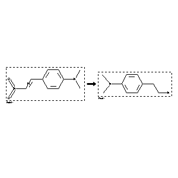

 |
| FA | RX(1); FLST(1); RX(1) |
Reaction (1 of 1)
| Reaction ID | 335619 |
| Reactant BRN | 2212055 |
| Reactant | N,N-dimethyl-4-(trans-2-nitro-vinyl)-aniline |
| Product BRN | 2802855 |
| Product | 4-dimethylamino-phenethylamine |
| No. of Reaction Details | 1 |
Reaction Details (1 of 1)
| Reaction Classification | Preparation |
| Reagent | LiAlH4; diethyl ether |
| Comment | Handbook |
| Citation Pointer | 994135; Journal; Benington et al.; JOCEAH; J.Org.Chem.; 21; 1956; 1470;1258139; Journal; Borovicka et al.; CHLSAC; Chem.Listy; 49; 1955; 231,241; CCCCAK; Collect.Czech.Chem.Commun.; 20; 1955; 437,449; Chem.Abstr.; 1956; 1639,1640; |
Reference (1 of 2)
| Citation Number | 994135 |
| Document Type | Journal |
| Authors | Benington et al. |
| CODEN | JOCEAH |
| Journal Title | J.Org.Chem. |
| (Series) Volume | 21 |
| Publication Year | 1956 |
| Page | 1470 |
Reference (2 of 2)
| Citation Number | 1258139 |
| Document Type | Journal |
| Authors | Borovicka et al. |
| CODEN | CHLSAC; CCCCAK |
| Journal Title | Chem.Listy; Collect.Czech.Chem.Commun. |
| Journal/Review Without CODEN | Chem.Abstr. |
| (Series) Volume | 49; 20 |
| Publication Year | 1955; 1955; 1956 |
| Page | 231,241; 437,449; 1639,1640 |